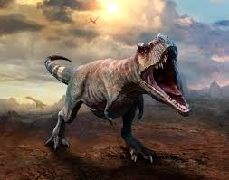

Like other tyrannosaurids, Tyrannosaurus was a bipedal carnivore with a massive skull balanced by a long, heavy tail. Relative to its large and powerful hind limbs, the forelimbs of Tyrannosaurus were short but unusually powerful for their size, and they had two clawed digits. The most complete specimen measures
